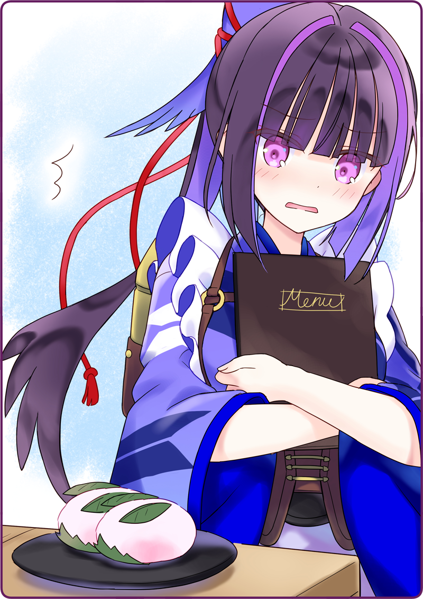

Usami: “Mình bảo rồi… tại Karasuba-san để quên chìa khóa nên bọn mình tới đưa cậu này.”
Không dám nhìn thẳng vào biểu cảm đang cười của Karasuba-san, tôi đành vừa cúi mặt xuống vừa đáp.
Quản lý: “Là chị cho tụi nó vào đấy.”
Quản lý: “Trong này thì phải gọi chị là Mama!”
Karasuba-san, người luôn chỉ đạo quán Mèo Đen một cách nghiêm khắc, giờ đây lại đang bị dồn ép.
Quả là một cảnh tượng hiếm thấy, nhưng cũng chẳng phải hình ảnh chúng tôi nên nhìn.
Haizakura: “Ưm, Karasuba-san! Màn trình diễn vừa rồi, thật sự rất tuyệt vời đấy ạ!”
Quản lý: “Ờ, đằng nào cũng là học trò số một của chị mà. Ngày trước tình hình rối ren quá sức nên chị mới không dám công khai… chứ bình thường thì chị đã giao bảng hiệu cho em rồi đấy.”
Haizakura: “Tuyệt quá đi ạ!”
Quản lý: “Karasuba, phục vụ đồ uống đi.”
Chị quản lý chỉ tay vào cốc của tôi.
Quản lý: “Sao đâu, khách của chị mà.”
Karasuba-san tuy nhìn tôi đầy phẫn uất, tay vẫn thả đá và rót nước cam vào cốc của tôi.
Quản lý: “Ban đầu con bé này vụng lắm, chẳng linh động gì cả.”
Quản lý: “Nhưng lại rất mực kiên cường, bảo rằng sẽ làm mọi thứ có thể vì quán Mèo Đen… thành ra chị cũng nghiêm túc luôn.”
Quản lý: “Mỗi tội cái tính kém thật thà thì vẫn vậy nhỉ? Nên là chị sẽ nói cho hai đứa hay.”
Chị quản lý nhìn thẳng vào tôi và Haizakura.
Quản lý: “Trà quán Mèo Đen vẫn còn tồn tại đến giờ này là vì Karasuba đã cố gắng hết sức để bảo vệ nơi con bé thuộc về đấy.”
Quản lý: “Cảm ơn em đã giúp mấy đứa nó luyện tập nhé. Nếu được thì chị muốn em lên sàn hôm tái mở cửa cơ…”
Quản lý: “Lạnh lùng quá nha.”
Quản lý: “Dễ thương thế còn gì.”
Hơi nước từ chiếc cặp sau lưng bốc lên nghi ngút, khuôn mặt của Karasuba-san đỏ như gấc chín.
Lần đầu tiên chúng tôi được thấy Karasuba-san thế này. Chẳng hiểu sao khung cảnh ấy trông thật ấm áp.
Nàng thỏ: “Mọi người ơi, xin dùng thử món này đi ạ.”
Hương thơm chua chua ngòn ngọt lan tỏa.
Một chị vũ nữ mang cho chúng tôi một đĩa thủy tinh đầy ắp hoa quả.
Usami: “Hơ?”
Quản lý: “Hoa quả chỗ chị trông tươi lắm phải không?”
Usami: “À, em đang nghĩ cách gọt này trông giông giống món bên quán Mèo Đen.”
Quản lý: “Thế á?”
Usami: “Món hoa quả thập cẩm ở quán Mèo Đen là ý tưởng của Karasuba-san…”
Quản lý: “Hô? Nhắc mới nhớ, hình như chị có dạy con bé cách gọt hoa quả nữa thì phải.”
Usami: “Nghe đâu là, để lưu lại những kỷ niệm về nơi này… hay sao ấy ạ.”
Quản lý: “Thiệt tình, cái con bé này đúng là chẳng thành thật gì hết.”
Usami: “Gekka có bảo Karasuba-san hồi đó đáng yêu lắm, chị biết ý em ấy là sao không ạ?”
Quản lý: “Hừm? À, thế chắc ý con bé là cái này.”
Chị quản lý từ tốn lấy ra một tấm ảnh từ trong túi và cho chúng tôi xem.
Trước khi Karasuba-san kịp nhảy vào giật tấm ảnh, chị chủ quán đã đưa nó sang bọn tôi rồi.
Quản lý: “Là một pô hồi luyện nhảy. Chị đây quan trọng hình thức lắm.”
Haizakura: “Ồ~ Đây là Karasuba-san sao ạ!”
Usami: “Hiểu rồi, đúng là trông đáng yêu thật.”
Trong bức ảnh mà chị quản lý đã chụp, là Karasuba-san mặc bộ đồ thỏ non.
Cô ấy đang mỉm cười, hơi ngượng nhưng cũng rất tự nhiên.
Haizakura: “Trà quán Mèo Đen, đã được Usagiba-san
[1] này bảo vệ nhỉ?”
Usami: “Nhưng mà trông hợp với cậu lắm. Thích mắt ghê…”
Karasuba-san than khóc trong nỗi bất lực.
Ai cũng có quá khứ của riêng mình. Xem chừng ngay cả Hình nhân cũng chẳng phải ngoại lệ.
＊ ＊ ＊
Ngày hôm sau—
Usami: “Xong rồi! Haizakura, em thấy sao?”
Tôi đặt một miếng mochi anh đào lên đĩa rồi đưa ra cho Haizakura xem.
Gọi là mochi anh đào, nhưng đây không phải mochi bọc trong lá anh đào.
Lá anh đào đã được cắt thành hình bầu dục và đặt lên mochi để trông giống “tai”.
Hơn nữa, trên đó còn có lá anh đào được cắt tròn để trông như “mắt”.
Haizakura: “Quả là một chú thỏ đáng yêu ạ! Dễ thương đến độ chỉ nhìn thôi mà em không nỡ ăn luôn!”
Xem ra đến cả người lên ý tưởng cũng đã hài lòng rồi.
Nghe tiếng Haizakura, Karasuba-san cũng bước vào gian bếp.
Thần thái vẫn như mọi khi, như thể cậu ấy đã quên hết những chuyện tối qua rồi.
Haizakura: “Karasuba-san! Nhìn này chị, món mới của quán mình đó!”

Haizakura: “Vâng! Chính là chú thỏ không thể tách rời khỏi Trà quán Mèo Đen đấy ạ!”
Haizakura: “Vâng! Món mới là bánh ngọt lấy ý tưởng từ Karasuba-san đấy ạ!”
Gekka: “Một phiếu tán thành.”
Gekka chẳng biết từ lúc nào đã vào bếp và lặng lẽ cho chúng tôi một phiếu thuận.
Otome: “Trông dễ thương đấy chứ. Lại còn là món chưa từng xuất hiện tại quán Mèo Đen nữa. Chị tán thành nhé.”
Okunomiya-san vừa đi qua bếp, thấy chiếc mochi anh đào liền lên tiếng tán đồng.
Usami: “Mình một phiếu nữa. À, mình cũng đưa chị Houkiboshi xem rồi, chị ấy bảo [Trông hay quá nha~].”
Karasuba-san rưng rưng mắt nhìn tôi chực khóc.
Có lẽ cô ấy thừa biết việc này là vô ích, vậy mà vẫn nhìn tôi hòng mong cầu điều gì đó.
Ừ, quả nhiên là vô ích rồi, tôi lặng lẽ gật đầu truyền đạt tâm ý.
Usami: “Được! Vậy quyết định đây sẽ là món mới của chúng ta nhé!”
Haizakura: “Vâng! Cuối cùng em cũng đã giúp ích được cho mọi người rồi!”
Tiếng hét của Karasuba-san vang vọng khắp Trà quán Mèo Đen.
Gekka nhanh tay viết tên món mới lên bảng thực đơn của quán.
[Nàng thỏ ở quán Mèo Đen].
[1] Chơi chữ, "usagi" là thỏ trong tiếng Nhật, và "ba" từ tên của Karasuba.

 “T-T-T-T-T-T-T-T-T-Tại sao hai người lại ở đây chứ hả?!!”
“T-T-T-T-T-T-T-T-T-Tại sao hai người lại ở đây chứ hả?!!”